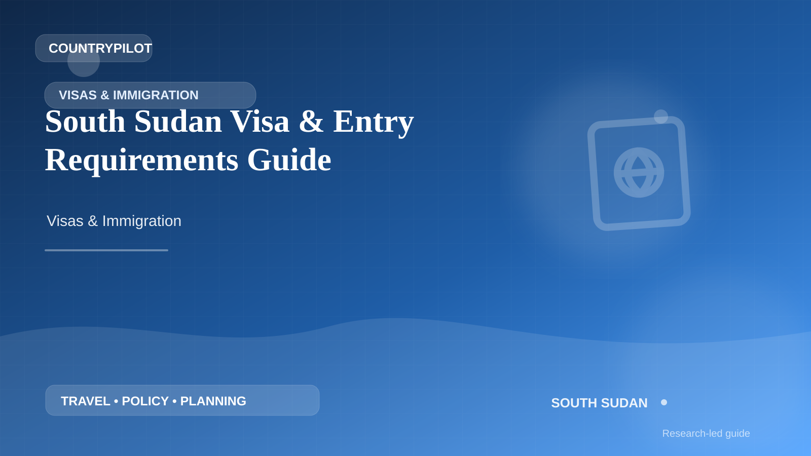

South SudanSouth Sudan · Visas & Immigration
South Sudan Visa & Entry Requirements Guide
Plan entry to South Sudan with a structured guide to passport validity, visa and eVisa checks, transit, border evidence, permitted activities, extensions and official sources for current requirements.